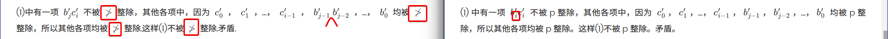
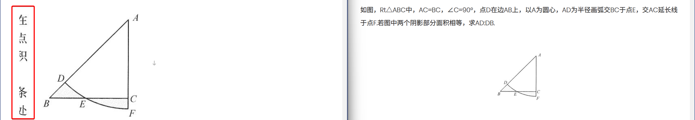
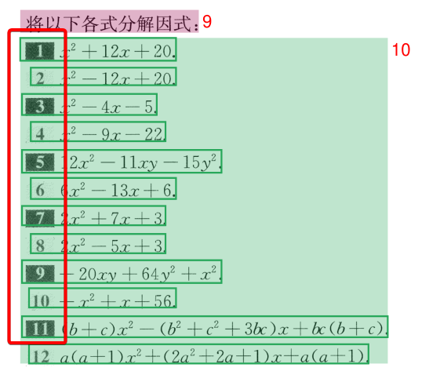
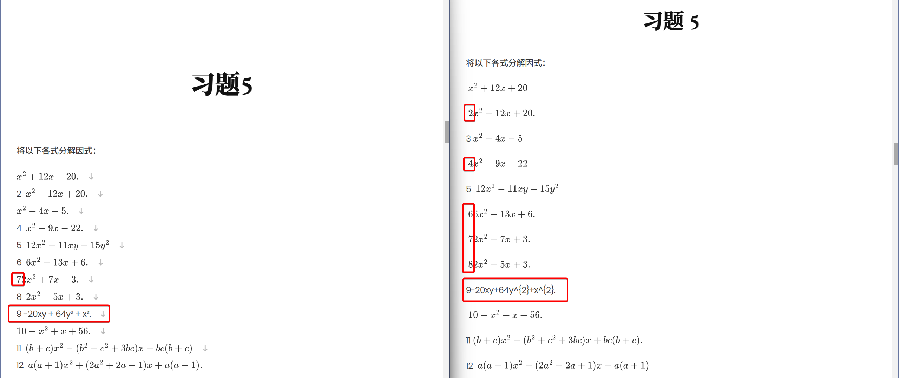
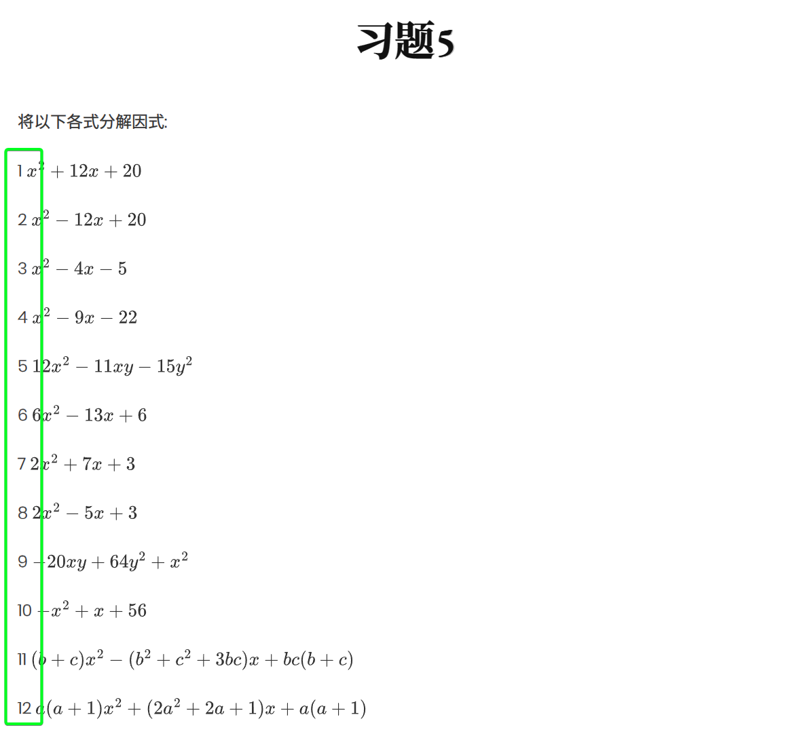

尝试使用MinerU
在之前的文章的评论区里，有人建议试一试MinerU。其实在去年7月MinerU刚发布的时候，我就尝试过，但是印象中效果非常差，根本没法实际使用。
正好我的电脑里还存有当时配置好的虚拟环境，又重新试了一下，结果印证了我的记忆。由于问题实在太多，我就不放截图了，只是罗列一下它的问题：
- 完全不能识别公式中的汉字
- 所有多行公式无法换行
- 经常漏识别公式的一部分（如最后的字母、特殊符号如平行等）
- 经常无法识别分式
- 偶尔会漏识别公式
- 经常识别不出特殊符号（如相似）
- 偶尔识别错误字母（例如
p识别成Φ） - 中英文混合的情况，不能识别英文之间的空格
- 偶尔汉字识别错误
- 偶尔公式后面多出东西（把公式的一部分重复识别成了文字）
- 偶尔多行公式排版错误（
$$后不换行直接跟文字） - 偶尔行间公式排版错误（错误使用
\$） - 经常错误识别标点符号（例如逗号识别成双引号），经常漏识别标点符号
这些问题导致识别得到的结果错误非常多，已经到了不可用的地步。
不过看官方仓库里的说明，新版的MinerU使用vLLM部署之后能有90+的准确率，我决定再试一下。
1. 安装新版MinerU
由于使用vLLM部署比pipeline模式的准确率高很多，加之8G显存够用了，因此我直接使用vLLM方式进行部署。
安装也很简单：
1 | uv venv --seed --python python3.13 |
此时的MinerU版本是2.6.4
接下来就可以使用了：
1 | uv run mineru -p input/test.pdf -o output -b vlm-vllm-engine |
进一步的配置选项可以参看官方选项，默认配置对于我来说就可以使用了。
这样临时使用一下还可以，但如果要大量文件需要识别，每次都会花大量时间在模型的加载上。这时可以使用server模式进行部署和调用。首先运行vllm-server：
1 | uv run mineru-vllm-server |
然后在另一个终端里运行
1 | uv run mineru -p input/test.pdf -o output -b vlm-http-client -u http://localhost:30000 |
即可。
2. 和PaddleOCR-VL的对比
在下面的对比图片中，左侧是MinerU的结果，右侧是PaddleOCR-VL的结果。
2.1. 速度
同样是识别小蓝本（共8本），耗时33分21秒，比PaddleOCR-VL慢了约17%。
2.2. 优势
MinerU没有出现PaddleOCR-VL中的公式错行现象，基本上能够正确识别公式的位置。
另外，MinerU对于特殊数学符号（如平行、相似等）的识别准确率要高于PaddleOCR-VL和DeepSeek-OCR。
2.3. 劣势
虽然最新的MinerU和最初的版本相比，前面列出的问题大部分都得到了解决，但是还有一部分被部分继承了下来。
例如，简单的文字识别错误：
简单的字母识别错误：

简单的标点识别错误：
另外，MinerU还出现了图片分割不准确的情况：

这个问题PaddleOCR-VL和DeepSeek-OCR从来没有出现过。
2.4. 共同的问题
MinerU和PaddleOCR-VL都在同一类地方栽了。类似下图，

识别的结果如下：

可以看到，二者都不能正确区分题目的序号和公式部分。
而DeepSeek-OCR能够正确处理：

3. 总结
如果让我给这几个OCR模型进行排行的话，大致是
DeepSeek-OCR ≳ MinerU 2.6 (vllm) > PaddleOCR-VL >> PaddleOCR (V3)
DeepSeek-OCR的优势在于排版最好，但是在识别一些复杂公式（如重分式）的时候可能会出问题（感觉是识别之后被改了）。
最大的劣势是模型还是偏大，模型参数本身超过6G，因此我没有办法在本地使用vLLM加速推理，只能使用Transformers进行推理（同时需要借用一部分内存），因此速度相比后两个慢很多。
MinerU的公式识别整体是最好的，但是会犯一些弱智的错误（比如经常识别不了字母p）。
前面两个基本上不分伯仲，关键是看注重哪方面。
PaddleOCR-VL的最大问题在于公式混合排版的输出顺序有问题。
上面两个都可以在本地（8G显存）使用vLLM进行加速，因此速度都是可用的。
PaddleOCR就连基本的退化问题都没有解决。
另外，PaddleOCR对于表格的识别也比PaddleOCR-VL差很多。